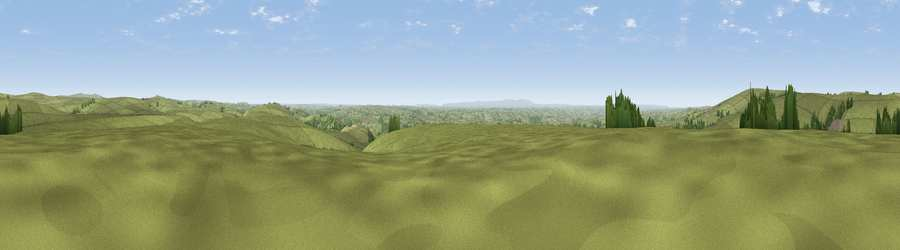

Round Hill
#10582 in England · top 18% of its area beats it · near TwitchenThe view, rendered

A 360° render of this exact spot computed from the terrain model, tree cover and land cover — summer colours, afternoon light, calibrated against photographs of famous viewpoints. Real trees, hedges and buildings will differ in detail.
The panorama
Grey silhouette: terrain skyline in each direction (720 bearings, Earth curvature and refraction included). Dashed green: skyline with trees (+15 m) and buildings (+8 m) as obstacles. Blue strip: how far the ground is visible on each bearing.
Where the view opens
Wedge length = distance to the farthest visible ground on that bearing (vegetation-aware). Rings at 10, 25 and 50 km.
What fills the view
91% grassland · 6% woodland · 3% cropland
Angular shares of the visible panorama (visual magnitude), not map area. Landscape diversity 0.17 (0–1 Shannon).
Key numbers
More beautiful places nearby
The staircase of upgrades: each row has a higher view potential than everything closer. Driving times are estimates from straight-line distance, calibrated against real road routing — check an actual route before setting out.
| Place | Direction | Drive | Score |
|---|---|---|---|
| Viewpoint near Twitchen | S · 1 km | ~2 min | 66.0 |
| Viewpoint near Twitchen | WNW · 3 km | ~8 min | 69.1 |
| Viewpoint near Simonsbath | NW · 8 km | ~16 min | 73.1 |
| Viewpoint near Brayford | NW · 10 km | ~19 min | 74.1 |
| Viewpoint near Exford | NNE · 13 km | ~24 min | 77.1 |
| Viewpoint near Luccombe | NE · 14 km | ~25 min | 84.5 |
| Viewpoint near Luccombe | NE · 16 km | ~28 min | 84.6 |
| Viewpoint near Porlock | NNE · 16 km | ~29 min | 86.3 |
51.06363, -3.70347 · source: osm peak · position refined by local search. Computed location — check access rights before visiting.